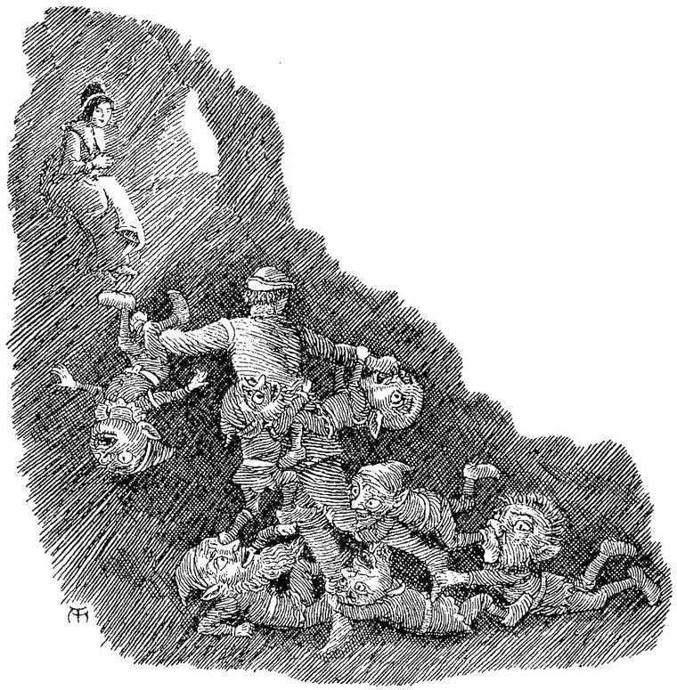

This must crush my spirit now;
Yet I bore it, and am bearing—
Only do not ask me how.”
HEINE.
When the daylight came, it brought the possibility of action, but with it little of consolation. With the first visible increase of light, I gazed into the chasm, but could not, for more than an hour, see sufficiently well to discover its nature. At last I saw it was almost a perpendicular opening, like a roughly excavated well, only very large. I could perceive no bottom; and it was not till the sun actually rose, that I discovered a sort of natural staircase, in many parts little more than suggested, which led round and round the gulf, descending spirally into its abyss. I saw at once that this was my path; and without a moment’s hesitation, glad to quit the sunlight, which stared at me most heartlessly, I commenced my tortuous descent. It was very difficult. In some parts I had to cling to the rocks like a bat. In one place, I dropped from the track down upon the next returning spire of the stair; which being broad in this particular portion, and standing out from the wall at right angles, received me upon my feet safe, though somewhat stupefied by the shock. After descending a great way, I found the stair ended at a narrow opening which entered the rock horizontally. Into this I crept, and, having entered, had just room to turn round. I put my head out into the shaft by which I had come down, and surveyed the course of my descent. Looking up, I saw the stars; although the sun must by this time have been high in the heavens. Looking below, I saw that the sides of the shaft went sheer down, smooth as glass; and far beneath me, I saw the reflection of the same stars I had seen in the heavens when I looked up. I turned again, and crept inwards some distance, when the passage widened, and I was at length able to stand and walk upright. Wider and loftier grew the way; new paths branched off on every side; great open halls appeared; till at last I found myself wandering on through an underground country, in which the sky was of rock, and instead of trees and flowers, there were only fantastic rocks and stones. And ever as I went, darker grew my thoughts, till at last I had no hope whatever of finding the white lady: I no longer called her to myself my white lady. Whenever a choice was necessary, I always chose the path which seemed to lead downwards.
At length I began to find that these regions were inhabited. From behind a rock a peal of harsh grating laughter, full of evil humour, rang through my ears, and, looking round, I saw a queer, goblin creature, with a great head and ridiculous features, just such as those described, in German histories and travels, as Kobolds. “What do you want with me?” I said. He pointed at me with a long forefinger, very thick at the root, and sharpened to a point, and answered, “He! he! he! what do you want here?” Then, changing his tone, he continued, with mock humility—“Honoured sir, vouchsafe to withdraw from thy slaves the lustre of thy august presence, for thy slaves cannot support its brightness.” A second appeared, and struck in: “You are so big, you keep the sun from us. We can’t see for you, and we’re so cold.” Thereupon arose, on all sides, the most terrific uproar of laughter, from voices like those of children in volume, but scrannel and harsh as those of decrepit age, though, unfortunately, without its weakness. The whole pandemonium of fairy devils, of all varieties of fantastic ugliness, both in form and feature, and of all sizes from one to four feet, seemed to have suddenly assembled about me. At length, after a great babble of talk among themselves, in a language unknown to me, and after seemingly endless gesticulation, consultation, elbow-nudging, and unmitigated peals of laughter, they formed into a circle about one of their number, who scrambled upon a stone, and, much to my surprise, and somewhat to my dismay, began to sing, in a voice corresponding in its nature to his talking one, from beginning to end, the song with which I had brought the light into the eyes of the white lady. He sang the same air too; and, all the time, maintained a face of mock entreaty and worship; accompanying the song with the travestied gestures of one playing on the lute. The whole assembly kept silence, except at the close of every verse, when they roared, and danced, and shouted with laughter, and flung themselves on the ground, in real or pretended convulsions of delight. When he had finished, the singer threw himself from the top of the stone, turning heels over head several times in his descent; and when he did alight, it was on the top of his head, on which he hopped about, making the most grotesque gesticulations with his legs in the air. Inexpressible laughter followed, which broke up in a shower of tiny stones from innumerable hands. They could not materially injure me, although they cut me on the head and face. I attempted to run away, but they all rushed upon me, and, laying hold of every part that afforded a grasp, held me tight. Crowding about me like bees, they shouted an insect-swarm of exasperating speeches up into my face, among which the most frequently recurring were—“You shan’t have her; you shan’t have her; he! he! he! She’s for a better man; how he’ll kiss her! how he’ll kiss her!”

The galvanic torrent of this battery of malevolence stung to life within me a spark of nobleness, and I said aloud, “Well, if he is a better man, let him have her.”
They instantly let go their hold of me, and fell back a step or two, with a whole broadside of grunts and humphs, as of unexpected and disappointed approbation. I made a step or two forward, and a lane was instantly opened for me through the midst of the grinning little antics, who bowed most politely to me on every side as I passed. After I had gone a few yards, I looked back, and saw them all standing quite still, looking after me, like a great school of boys; till suddenly one turned round, and with a loud whoop, rushed into the midst of the others. In an instant, the whole was one writhing and tumbling heap of contortion, reminding me of the live pyramids of intertwined snakes of which travellers make report. As soon as one was worked out of the mass, he bounded off a few paces, and then, with a somersault and a run, threw himself gyrating into the air, and descended with all his weight on the summit of the heaving and struggling chaos of fantastic figures. I left them still busy at this fierce and apparently aimless amusement. And as I went, I sang—
I will weep aside;
It is well that thou should’st be,
Of the nobler, bride.
Where the heart is free,
Homeless yet the heart must roam,
That has not found thee.
Yield in her my part
Take her, thou art worthier—
Still I be still, my heart!
Of a frustrate will!
But to yield it lovingly
Is a something still.
Then a little song arose of itself in my soul; and I felt for the moment, while it sank sadly within me, as if I was once more walking up and down the white hall of Phantasy in the Fairy Palace. But this lasted no longer than the song; as will be seen.
Perfume to afford:
Else no odour thou wilt get
From its little hoard.
Look not thou too long;
Else from them the glory flies,
And thou dost her wrong.
Clasp her not too wild;
Else the splendour is allayed,
And thy heart beguiled.
A crash of laughter, more discordant and deriding than any I had yet heard, invaded my ears. Looking on in the direction of the sound, I saw a little elderly woman, much taller, however, than the goblins I had just left, seated upon a stone by the side of the path. She rose, as I drew near, and came forward to meet me.
She was very plain and commonplace in appearance, without being hideously ugly. Looking up in my face with a stupid sneer, she said: “Isn’t it a pity you haven’t a pretty girl to walk all alone with you through this sweet country? How different everything would look? wouldn’t it? Strange that one can never have what one would like best! How the roses would bloom and all that, even in this infernal hole! wouldn’t they, Anodos? Her eyes would light up the old cave, wouldn’t they?”
“That depends on who the pretty girl should be,” replied I.
“Not so very much matter that,” she answered; “look here.”
I had turned to go away as I gave my reply, but now I stopped and looked at her. As a rough unsightly bud might suddenly blossom into the most lovely flower; or rather, as a sunbeam bursts through a shapeless cloud, and transfigures the earth; so burst a face of resplendent beauty, as it were through the unsightly visage of the woman, destroying it with light as it dawned through it. A summer sky rose above me, gray with heat; across a shining slumberous landscape, looked from afar the peaks of snow-capped mountains; and down from a great rock beside me fell a sheet of water mad with its own delight.
“Stay with me,” she said, lifting up her exquisite face, and looking full in mine.
I drew back. Again the infernal laugh grated upon my ears; again the rocks closed in around me, and the ugly woman looked at me with wicked, mocking hazel eyes.
“You shall have your reward,” said she. “You shall see your white lady again.”
“That lies not with you,” I replied, and turned and left her.
She followed me with shriek upon shriek of laughter, as I went on my way.
I may mention here, that although there was always light enough to see my path and a few yards on every side of me, I never could find out the source of this sad sepulchral illumination.